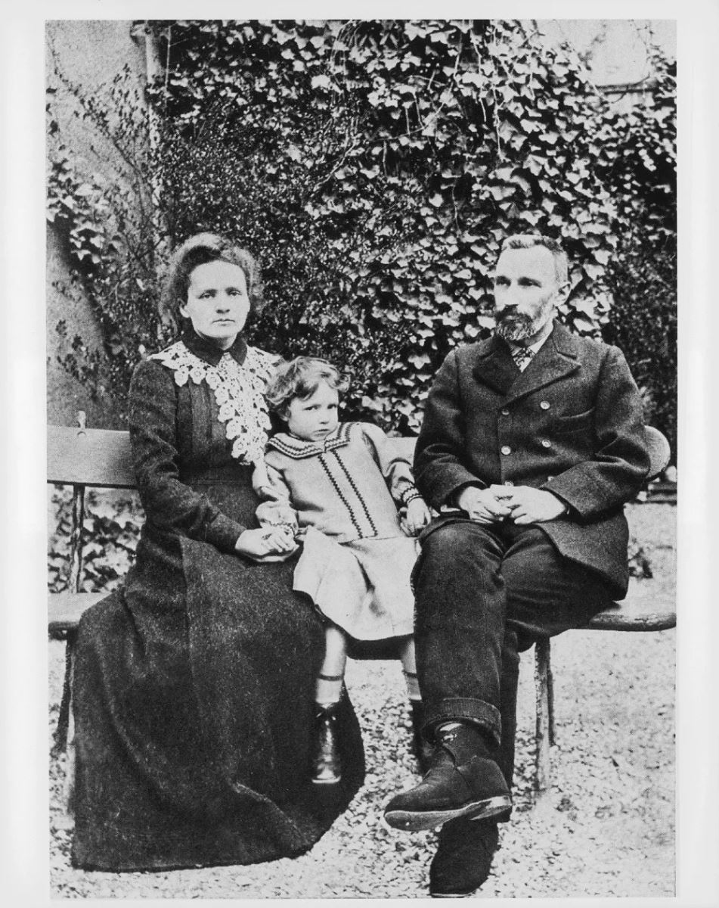

Chương 11
Những ngày đầu chung sống đẹp như tranh… Pierre và Marie đi chơi xe đạp khắp các nẻo đường chung quanh Paris thuộc vùng “hòn đảo đất Pháp”[33], cái tên gọi Pháp thời cổ. Trên giá xe chỉ độc mấy bộ quần áo và hai chiếc áo quàng vải nhựa, phải sắm thêm vì dạo này mùa hè mưa luôn. Trưa đến, dừng xe ở một chỗ rừng thưa, ngồi nghỉ trên bãi cỏ, giở bánh mỳ, pho mát, mấy quả đào và anh đào ra ăn.
Một buổi chiều, hai người nghỉ trọ một quán dọc đường. Ở đây có xúp đặc và nóng, có một phòng ngủ bốn vách dán giấy đã bạc màu, ánh nến thắp lên cứ làm những cái bóng nhảy múa chập chờn. Đêm nông thôn không thật tĩnh mịch, chốc chốc lại nghe tiếng chó sủa xa xa, tiếng chim gù, tiếng mèo gào và tiếng sàn nhà cọt kẹt phát sợ.
Cũng có khi họ dừng xe, thủng thẳng dạo quanh các lùm cây, mỏm đá.
 .
.
Pierre yêu thích thôn quê say sưa, dạt dào. Hình như những cuộc đi bộ dài thanh thản ấy cần thiết cho tài năng của anh nảy nở và kích thích tư duy của nhà bác học. Nếu đã ra vườn, Pierre không thể nào ngồi yên chỗ. Anh không biế ‘‘nghỉ ngơi”. Anh lại không thích những cuộc đi chơi thông thường, sắp xếp trước từng chặng. Tựa hồ như anh không có khái niệm về thời gian. Sao cứ phải ban ngày mới đi, mà chẳng đi ban đêm và cứ đợi đến ngày mới ăn? Pierre vốn quen cái nếp này từ bé, hễ thích thì đi, bất luận sáng sớm hay chiều tối, mà cũng chẳng cần biết mình sẽ quay về sau ba ngày hay sau một giờ. Xưa kia Pierre thường cùng anh ruột đi chơi phóng khoáng như thế, cho đến nay vẫn giữ lại những kỷ niệm tuyệt vời…
Song những chuyến đi chơi đó đây, hè 1895, “tuần trăng mật du ngoạn” đó còn êm dịu hơn nhiều vì được tình yêu tô điểm và làm cho thêm rạo rực.
Chỉ tốn vài phơ-răng (francs) tiền trọ trong làng, và chịu khó đạp xe, cặp vợ chồng trẻ đã tạo cho mình những ngày và đêm thần tiên hạnh phúc, chỉ có hai người với nhau.
Hôm nay, gửi xe đạp trong làng, Pierre và Marie đã rời đường cái, dần bước vào một con đường nhỏ chỉ mang theo mình một la bàn và mấy trái cây. Pierre đi trước, bước từng bước dài, Marie thoăn thoắt theo sau. Phớt lờ cả tục lệ, cô xắn váy cao hơn để đi cho dễ dàng. Đầu tóc để trần, cô mặc một cái áo trắng rất tươi mát, dễ coi, đi đôi giầy to và mang một thắt lưng da chỉ tiện chứ không đẹp. Trong túi thắt lưng có một cái đồng hồ, một dao díp và ít tiền lẻ.
Pierre không ngoảnh lại nhìn vợ, vừa đi vừa nói to lên những suy nghĩ lúc này về một vấn đề tinh thể học phức tạp. Anh biết rằng Marie vẫn chú ý nghe và sẽ có một câu trả lời thông minh, độc đáo và lý thú. Marie cũng có nhiều dự định lớn. Cô sẽ chuẩn bị thi thạc sỹ và thể nào ông hiệu trưởng trường Vật lý và Hóa học cũng sẽ cho phép cô cùng nghiên cứu trong một phòng thí nghiệm với Pierre. Luôn luôn sống bên nhau! Không khi nào xa rời nhau!
Xuyên qua những lùm cây, họ đến một bờ ao chung quanh đầy sậy. Pierre như một đứa trẻ thơ hồn nhiên vui thú khám phá ra thế giới sinh vật và thực vật của đám nước tù hãm. Anh rất am hiểu về các loại thằn lằn, chuồn chuồn, kỳ đà… Trong khi Marie ngả lưng trên cỏ, anh thoăn thoắt bước trên một cây đổ, lỡ chân là ngã và ướt hết đấy, nhưng anh cứ cố với tay hái vài bông dong vàng và hoa súng màu nhợt nổi lềnh bềnh trên mặt nước…
Chợt nhớ đến công việc, Pierre không thiết gì đến trời đất nữa. Bao khó khăn tinh tế và mênh mông trong nghiên cứu đang đòi hỏi giải quyết, bao bí mật về sự tăng cường các tinh thể đang quyến rũ anh. Pierre mô tả cái máy mà anh muốn lắp để làm một thí nghiệm mới. Và Marie với một giọng trung thực, lại có những câu hỏi thông minh, những câu trả lời đầy suy nghĩ.
Những ngày hạnh phúc ấy, một sợi dây đẹp nhất đã nối liền đôi trai gái. Hai trái tim cùng đập một nhịp, hai bộ óc kỳ tài cùng chung một tư duy. Ma-ri không thể lấy ai hơn là nhà vật lý có tài, một con người khôn ngoan có tinh thần cao thượng. Pierre cũng không thể lấy ai hơn cô gái Ba Lan tóc hung, âu yếm, linh hoạt, trong chốc lát có thể đang ngây thơ chuyển thành siêu việt, vừa là bạn vừa là vợ, vừa là người yêu và nhà bác học.
*
Mùa hè êm đềm, tuyệt đẹp! Đầu tháng 8, hai vợ chồng dọn đến gần Săng-ti-i (Chantilly) ở một trại nhỏ lấy tên là “Con Hươu”. Lần này, cũng lại nhờ tài của Brô-ni-a (Bronia), họ đã thuê được một căn nhà yên tĩnh này trong mấy tháng. Pierre và Marie đến đây ở cùng với bà cụ Du-xki (Dłuski), vợ chồng chị Bronia và đứa cháu gái Hélène - quen gọi là “Lu” và cụ Xkhua-đốp-xki cùng Helena còn chơi ở Pháp. Thú vị thay, một ngôi nhà nên thơ, chơi vơi giữa những lùm cây gỗ, nơi trú ẩn của thỏ rừng và chim trĩ! Thú vị thay tình thân thương gắn bó hai dòng họ và ba thế hệ!
Pi-e Qui-ri (Pierre Curie) đã hoàn toàn giành được tình cảm của nhà vợ. Anh bàn luận về khoa học với cụ Xkhua-đốp-xki (Skłodowski). Anh thủ thỉ nói chuyện với cái “Lu” ba tuổi, rất kháu, rất nhộn, là niềm vui của cả nhà. Thỉnh thoảng, hai cụ Qui-ri (Curie) ở Sceaux sang chơi. Đến bữa, trên chiếc bàn ăn rộng, lại đặt thêm hai bộ bát đĩa. Cả nhà rộn ràng tiếng nói tiếng cười, hết chuyện hóa học lại đến chuyện y học rồi sang giáo dục trẻ em, rồi vấn đề khoa học ở Pháp, ở Ba Lan.
Bản chất Pierre không hề có một chút hoài nghi gì đối với người nước ngoài như thường thấy ở những đồng bào của anh. Hai gia đình Du-xki (Dłuski), và Xkhua-đốp-xki (Skłodowski) lại làm cho nhà bác học siêu lòng. Muốn biểu lộ tình yêu nồng thắm của mình, anh cố gắng một cách cảm động học tiếng Ba Lan, thứ tiếng khó nhất Châu Âu và thời đó bị xem như vô ích vì là thứ tiếng của một nước đã bị xóa tên trên bản đồ thế giới.
Ở trại “Con Hươu”, Pierre học tiếng Ba Lan. Đến tháng 9, theo chồng về ở Sceaux, thì lại đến lượt Marie trau giồi thêm tiếng Pháp. Cô chẳng mong gì hơn. Marie rất quý bố mẹ chồng. Tình thương yêu của hai cụ Curie sẽ làm dịu bớt nỗi nhớ nhung của cô khi giáo sư Skłodowski và chị Helena trở về Varsovie.
Vốn có tâm hồn cao cả, hai cụ Curie không hề ngạc nhiên về việc Pierre lấy một cô gái nghèo người nước ngoài, gặp gỡ trong một gian xép sát nóc ở khu La Tinh. Ngay từ lúc đầu, hai cụ đã mến Marie, không chỉ vì cái “duyên dáng Xla-vơ” mà còn do vẻ thông minh khác thường và tính tình của Marie nữa.
Về ở Sceaux, Marie chỉ lấy làm lạ có mỗi một điều là thấy mọi người ở đây rất hăng say bàn luận chính trị. Bác sỹ Curie có cảm tình với trào lưu tư tưởng 1848, chơi thân với Hăng-ri Brit-xông (Henri Brisson ) trong Đảng cấp tiến. Cụ thích đấu tranh. Marie xưa nay đã từng quen chống đối lại ách áp bức của nước ngoài, lần này có dịp hiểu thêm các kiểu tranh chấp đảng phái thông thường mà người Pháp vẫn ưa chuộng. Cô không được nghe những cuộc tranh luận tràng giang đại hải cùng những học thuyết sôi nổi đầy tính chiến đấu và lòng nhân đạo. Và mỗi khi mệt mỏi, cô lại đến bên chồng, anh vẫn im lặng, mơ màng, không tham gia vào cuộc bàn cãi…
*
Ở số nhà 24 phố Nhà máy nước đá, cửa sổ trông ra một khu vườn rộng, cây to. Đó là thú vui duy nhất của gian nhà thiếu tiện nghi này. Đôi vợ chồng trẻ dọn đến đây từ tháng mười. Ba buồng chật hẹp. Pierre và Marie chẳng thiết trang hoàng gì, và không nhận mấy thứ đồ đạc cụ Curie cho, vì chật chỗ. Thêm một tràng kỷ hay một chiếc ghế bành là thêm công quét bụi buổi sáng và lau chùi vào những ngày dọn dẹp. Marie đâu có thì giờ làm những công việc ấy!
Hàng ngày, Pierre chỉ có một say mê là cùng nghiên cứu khoa học với người vợ thân yêu. Cuộc sống của Marie chật vật hơn, vì ngoài việc nghiên cứu, còn việc nội trợ tầm thường và vất vả. Giờ đây, không thể lơ là đời sống vật chất như hồi còn là sinh viên Sorbonne nữa. Đi nghỉ hè về, Marie mua ngay một quyển sổ bìa đen có in chữ vàng: “Chi tiêu”.
Mỗi tháng, lương của Pierre ở trường Vật lý và Hóa học là năm trăm quan. Trong khi chờ đợi Marie thi xong thạc sỹ, sẽ được giảng dạy ở Pháp, số tiền này là tất cả thu hoạch của đôi vợ chồng trẻ. Với một gia đình bình thường thì cũng tạm đủ, Marie đã học cách chi tiêu dè sẻn. Vấn đề lúc này là làm thế nào trong hai mươi bốn giờ, thanh toán hết mọi công việc nhọc nhằn của một ngày. Phần lớn thì giờ, Marie ở phòng thí nghiệm, ở đây cô đã được sắp xếp một chỗ làm việc. Vào đến nơi này là hạnh phúc rồi. Thế nhưng ở nhà riêng, phố Nhà máy nước đá, phải dọn giường, quét sàn, quần áo của Pierre phải lành lặn, chỉnh tề, các bữa ăn phải tươm tất. Mà không có ai giúp cả…
Thế là Marie dậy rõ sớm, đi chợ và đến chiều, ở trường về lại cùng Pierre tạt vào hàng thực phẩm và hàng sữa. Thời nào cô Xkhua-đốp-xka vô tư không biết nấu súp với những thứ nay còn đâu? Đối với bà Curie, giờ đây biết những cái đó, là một vấn đề danh dự.
Trước khi lập gia đình, Marie đã lén đến nhờ bà cụ Dłuski và chị Bronia bày cho cách nấu nướng, tập luộc gà, rán khoai. Nay cô đã làm được những món ăn ngon lành cho Pierre, còn Pierre thì đãng trí đến nỗi không thấy sự cố gắng vượt bậc ấy.
Marie có một niềm tự ái hơi trẻ con. Cô không muốn để mẹ chồng người Pháp, nhỡ ra một hôm làm món trứng hỏng, sẽ hỏi to, chẳng hiểu họ dạy các cô gái Varsovie làm những gì mà đến tráng một cái trứng cũng không nên thân? Giả sử có như vậy thì cô sẽ hổ thẹn biết chừng nào! Cô đọc đi đọc lại quyển sách dạy nấu nướng, và mỗi lần tập, đều ghi kỹ bên trang sách lần nào làm hỏng, lần nào thành công, và tại sao, với những từ khoa học chính xác.
Người nội trợ trẻ đó nghĩ ra những món ăn dễ làm, ít phải canh, có thể để “mặc cho nó chín âm ỉ” trong những giờ mình đến trường. Nấu bếp cũng khó như nghiên cứu khoa học, cũng lắm bí ẩn không kém. Làm cách nào cho mỳ ống khỏi dính nồi? Hầm thịt bò thì cho vào nước lã hay nước đang sôi? Luộc đậu cô ve phải bao nhiêu lâu mới chín? Marie, má đỏ ửng lên vì nóng, cứ thở ngắn thở dài trước cái bếp đốt bằng than khí. Nhớ lại xưa kia, ăn bánh mì với bơ, uống nước trà, ăn củ cải đỏ và quả anh đào, chẳng đơn giản hơn sao?
Khó thì khó, cô vẫn dần dần giỏi hơn. Cái bếp hơi đã bao phen làm cháy món thịt bò nay phải vào khuôn phép. Trước khi đi, Marie vặn nhỏ lửa với sự chính xác của nhà vật lý rồi tần ngần nhìn một lần cuối mấy chiếc xoong đặt trên bếp lửa, cô đóng cửa phòng, bước vội xuống theo kịp Pierre để cùng tới trường.
Mười lăm phút sau, cô đã đang cúi xuống những nồi cổ cong khác, cũng với một động tác thận trọng, cô lại điều chỉnh ngọn lửa của một “đèn khí phòng thí nghiệm”.
*
Tám giờ nghiên cứu khoa học, và khoảng ba giờ nội trợ, nào đâu đã xong việc! Tối đến, sau khi ghi các chi tiêu hàng ngày, Marie lại ngồi trước cái bàn gỗ tạp vùi đầu vào sách. Giờ là lúc chuẩn bị cho kỳ thi thạc sĩ sắp tới. Ngồi bên kia ngọn đèn, Pierre đang cặm cụi thảo giáo trình dạy ở trường Vật lý và Hóa học. Nhiều lúc, Marie cảm thấy đôi mắt sâu đẹp đẽ của chồng nhìn mình. Cô ngước lên, gặp cái nhìn của Pierre một biểu hiện yêu đương và khâm phục. Một nụ cười trao đổi giữa hai con người đang yêu đó. Đến hai, ba giờ sáng, vẫn có ánh đèn trên những khung cửa kính và trong cái phòng làm việc chỉ có hai ghế đó vẫn nghe tiếng trang sách khẽ lật say sưa và tiếng ngòi bút viết miệt mài trên giấy.
Marie thi thạc sĩ, đỗ đầu. Pierre sung sướng quàng tay vào cổ người vợ Ba Lan yêu quí. Vai kề vai, hai anh chị trở về phố Nhà máy nước đá và ngay lúc ấy, họ bơm xe đạp, soạn ba lô, đi chơi vùng Ô-véc-nhơ.(Auvergne)
Sao mà hai vợ chồng này phung phí sức lực như thế, cả về trí tuệ và thể xác! Ngay đến những ngày nghỉ của họ cũng là một sự tiêu pha năng lượng thái quá.
Trích một trang sổ tay của Marie về những ngày sống sôi nổi đó:
“Chúng tôi còn giữ một kỷ niệm rạng rỡ về một ngày nắng ráo, sau một đoạn leo dốc mệt nhọc, chúng tôi rong xe qua cánh đồng cỏ xanh tươi, mát mẻ của vùng Ô-brac (l’Aubrac), được hít thở không khí trong lành trên cao nguyên. Một kỷ niệm sống nữa là một buổi chiều, vào đến thung lũng Tơ-luy-e, được nghe một điệu dân ca rất mê ly vọng xa từ một con thuyền trôi theo dòng nước. Vì không thích tính chặng đường, mãi đến tảng sáng hôm sau mới về nhà. Chả là gặp mấy chiếc xe ngựa, những con vật thấy hai cái xe đạp hốt hoảng, lồng lên làm chúng tôi phải đi tắt qua mấy thửa ruộng vừa cày ải. Sau đó lại lên đường cái đạp xe trên cao nguyên ánh trăng huyền ảo”…
Năm thứ hai cuộc sống gia đình chỉ khác năm đầu là về tình hình sức khỏe. Marie đã có mang, lòng thì mong muốn có con nhưng lại bực bội vì mệt mỏi, không còn đứng trước các dụng cụ để nghiên cứu “từ tính của các kim loại”.
Tháng 7 năm 1897, Pierre và Marie, từ hai năm nay, chưa rời nhau một bước, lần đầu tiên phải xa nhau. Nhân dịp cụ Xkhua-đốp-xki sang Pháp nghỉ hè, Marie đã đến ở với bố tại khách sạn “Những phiến đá xám” ở Po-blăng, còn Pierre bận không đi được.
Pierre biên thư cho Marie tháng 7 năm 1987:
“Em rất yêu quí, hôm nay anh vừa được thư em và lòng anh tràn ngập sung sướng. Ở đây không gì mới cả, chỉ thiếu em thôi, tâm hồn anh đang bay theo em.”
Mấy dòng chữ này, Pierre viết nắn nót…
Bằng tiếng Ba Lan, thứ tiếng khó học mà nhà vật lý lại muốn viết cả những lời âu yếm nhất. Ma-ri cũng trả lời bằng tiếng Ba Lan với những câu dễ đọc, cho người mới học:
“Anh yêu dấu, trời đẹp, nắng ấm.
Vắng anh, em buồn rười rượi, em đợi anh cả sáng lẫn chiều mà không thấy anh đến. Em vẫn khỏe và cố hết sức làm việc, song cuốn sách của Poăng-ca-rê[34] khó hơn là trước đây em nghĩ. Em cần trao đổi với anh để cùng xem chỗ nào khó hiểu đối với em”.
Lại dùng tiếng Pháp, Pierre biên thư cho Marie, mở đầu bằng “Em rất đỗi yêu quý”, kể vội cuộc sống ở Sceaux và công việc cuối năm của anh. Anh nghiêm túc nhắc đến tã lót, áo dài tay, và áo cánh của đứa trẻ sắp chào đời.
“Hôm nay anh gửi một bưu kiện cho em, có hai áo đan dài tay, hình như của bà P. gửi. Một cỡ bé và một cỡ to. Cỡ nhỏ hợp với áo len đan chun, còn bằng vải thì phải rộng hơn. Em cần phải có hai cỡ.”
Bất giác, anh lại nói đến tình yêu của mình với những lời đằm thắm hiếm có:
“Anh nhớ đến em, người đã chiếm hoàn toàn cuộc sống của anh. Và anh mong sao có thêm tài năng. Anh tưởng như nếu dồn tất cả trí tuệ vào em như lúc này anh đang làm, đáng ra anh phải có thể nhìn thấy em, xem em đang làm gì và làm em thấy rằng hiện giờ anh hoàn toàn thuộc về em. Song vẫn không tài nào có được một hình ảnh như thế”.
Đầu tháng 8, Pierre vội vã đến tìm Marie ở Pô-blăng. Trong tình trạng Marie có mang tám tháng, ai cũng tưởng hai vợ chồng sẽ nghỉ ngơi yên tĩnh. Không! Họ thật vô tâm như những người mất trí - hay những nhà bác học. Họ lại đi xe đạp tới Bretz - vẫn đi từng chặng đường dài như mọi bận. Marie thì quả quyết là không thấy mệt, còn Pierre thì vội tin ngay. Anh cảm thấy dường như Marie là một con người khác thường, thoát khỏi quy luật của tạo hóa.
Song lần này, Marie không đương nổi nữa, buộc lòng phải rút ngắn chuyến đi để trở về Paris. Ngày 12 tháng 9 năm 1897, con gái đầu lòng của hai nhà bác học ra đời. Đó là I-ren (Irène), một đứa bé xinh đẹp, một phần thưởng Nobel tương lai, bác sỹ Curie đỡ đẻ cho con dâu. Marie cắn răng không một tiếng kêu rên.
Sinh nở không tốn kém gì. Trong sổ chi tiêu ngày 12 tháng 9 có ghi một mục “đặc biệt”: rượu sâm panh 3 quan, đánh điện 1 quan 10, trong mục “đau ốm”: dược phẩm và công chăm nom người bệnh 71 quan 50. Tổng cộng chi tiêu tháng 9 là 430 quan 40. Hai gạch đậm dưới con số 430 nói lên sự bực dọc của người ghi sổ về khoản chi tiêu đã tăng thêm như vậy.
*
Marie không hề nghĩ đến chọn giữa xây dựng hạnh phúc gia đình và theo đuổi sự nghiệp khoa học. Bà đã quyết định làm song song. Yêu đương, sinh nở và nghiên cứu khoa học, và không lơ là mặt nào. Và nếu bà thành công trong mọi việc, đó là nhờ tình yêu và lý trí.
Theo ý kiến thầy thuốc, người mẹ trẻ phải cho con cai sữa. Nhưng sáng, trưa, chiều, tối, Marie tắm, thay quần áo cho bé Irène và trong khi người vú đẩy xe em bé ra công viên, nhà nữ bác học lại bận rộn trước các dụng cụ phòng thí nghiệm, thảo gấp công trình nghiên cứu về các chất nam châm sẽ đăng trong bản tin của “Hội khuyến khích kỹ nghệ quốc gia”.
Thế là cùng một năm sinh đứa con đầu lòng, chỉ sau đó ba tháng, Marie công bố kết quả nghiên cứu đầu tiên của mình.

.Marie, Irène và Pierre Curie
Nhiều lúc bà tưởng như không thể đương nổi cuộc sống căng thẳng, mệt nhọc chẳng khác gì làm xiếc đó. Từ khi có mang, sức khỏe Marie giảm sút rõ rệt. Anh Ca-di-mia Du-xki (Kazimierz Dłuski) và bác sĩ Vô-chi-ê, thầy thuốc vẫn khám bệnh cho gia đình Curie đều nói Marie bị nám phổi bên trái. Nhớ lại xưa kia bà giáo đã chết vì lao, hai bác sĩ khuyên Marie nên nghỉ ngơi, tĩnh dưỡng vài tháng. Nhưng Marie không nghe. Vì còn bao mối lo khác! Nào phòng thí nghiệm, nào chồng, nào con, Irène mọc răng, quấy, rồi cúm, những chuyện nho nhỏ này thường làm cho hai nhà vật lý phải nhiều đêm mất ngủ. Cũng có khi Marie tự nhiên hốt hoảng tất tả chạy ra ngoài trường Vật lý, đến công viên Mông-xu-ri (Montsouris). Chẳng biết người vú có để lạc con bé không? Kia rồi, ở đằng xa, bà vẫn trông thấy chị ta và cái xe bé nhỏ, bên trong xe có vật gì trăng trắng.
Cụ Curie đã đem lại cho con dâu một sự giúp đỡ quý báu. Marie sinh Irène được vài ngày thì bà bác sỹ Curie qua đời nên cụ quấn quýt với cháu bé. Trong vườn nhà, cụ chăm nom dìu dắt từng bước đi chập chững đầu tiên của Irène. Khi Pierre và Marie không ở phố Nhà máy nước đá nữa mà dọn đến một ngôi nhà nhỏ ở phố Kê-lec-man thì cụ cũng đến ở với con cháu, Irène sẽ thấy ở ông nội một người thầy dạy học và bạn chơi thân thiết nhất.
*
Quãng đường dài biết bao từ buổi sáng tháng mười một 1891 khi một cô gái Ba Lan tay mang tay xách bộn bề những gói, đáp tàu hỏa đến ga Phương Bắc trong một toa xe hạng ba…! Maria Skłodowska đã khám phá ra vật lý, hóa học và toàn bộ cuộc đời của một người đàn bà. Cô đã thắng mọi trở ngại, khó khăn, từ cái nhỏ nhất đến cái lớn nhất mà không một lúc nào ngờ rằng mình đã phải vận dụng một tinh thần bền bỉ và một lòng dũng cảm phi thường.
Những bước đầu phấn đấu và những thắng lợi ấy đã làm Marie thay đổi từ dáng người đến khuôn mặt. Không sao khỏi xúc động khi nhìn hình ảnh Marie lúc ngoài ba mươi tuổi, cô gái chắc nịch năm xưa đã thành một thiếu phụ mảnh khảnh. Giờ đây, trông thấy Marie ai cũng nghĩ: “Người đàn bà nào mà đẹp lạ lùng, quyến rũ thế?” nhưng lại không dám nói ra vì bà có vầng trán rộng mênh mông và cái nhìn sâu thẳm.
Bà Curie đẹp ra như để sửa soạn đón vinh quang đang chờ đợi.
Chú thích:
[33] Ile de France - một hòn đảo giữa sông Seine ở Paris
[34] Henri Poincare ( 1854 – 1912) nhà toán học Pháp